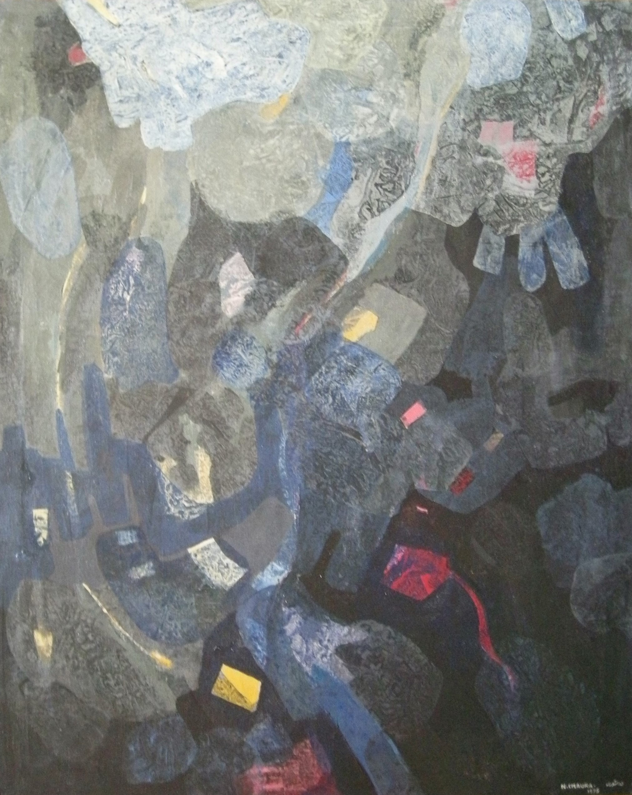

Nasser Chaura
1920–1992
Artist Biography
Nasser Chaura was born in Damascus, Syria to a wealthy family and, determined to pursue painting, held a first solo exhibition at Damascus Officer’s Club in 1938 aged just eighteen. He travelled to Rome but on the outbreak of war returned to Damascus where in 1941 he co-founded Studio Veronese, the first active art hub in Syria. Here he was influenced by impressionism brought by fleeing Eastern European artists, which was to remain his main style until the 1960s. Chaura studied at the Faculty of Fine Arts in Cairo, Egypt from 1942-47 and on his return to Damascus set up a studio which was to become a key part of the local art scene. In 1960 he helped found the Faculty of Fine Arts at the University of Damascus, teaching there for some thirty years. Many of Syria’s most noted artists, such as Marwan, studied under Chaura. Chaura’s own art underwent a radical shift in 1964 when he switched to abstraction and from oils to acrylics. The following year, with Fateh Moudarres and others, he established the Damascus Group (or D Group) of abstract artists and this group exhibited at the Siwann Gallery in Damascus and also at the Sao Paolo biennale in Brazil. His art underwent a further change in the mid-1970s when he switched back towards landscapes and representation in an impressionist manner, albeit retaining elements of abstraction. He had a solo exhibition at Ebla Gallery of Art in Damascus in 1984 and throughout his life was considered one of Syria’s most important artists. HChaura’s work is held in major collections in the Middle East, notably the Arab Museum of Modern Art in Doha, the Dalloul Foundation in Lebanon, Alessi Foundation in Dubai and Syria’s National Museum of Damascus.

No: 55, 1975